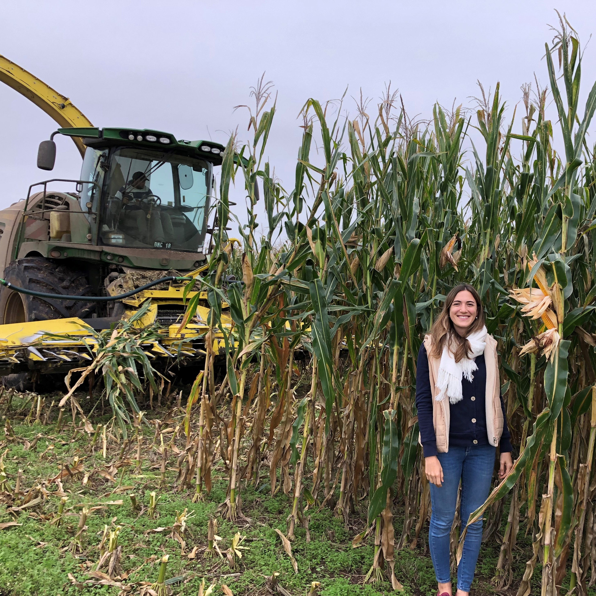

TAMBO EL TALITA
El tambo esta localizado en Sacanta, Cordoba. En la actualidad se ordeñan 300 vacas en promedio a lo largo del año con una producción media de 33 litros/vaca. Las vacas y vaquillonas que entran en produccion son producto de la misma explotacion, donde la reposicion propia es prioridad.
Nuestro sistema de producción
Las vacas en producción de leche se encuentran en un galpón con instalaciones Free stall (camas de arena) para alojar 300 vacas de forma estabulada. De esta manera, nos aseguramos que los animales tengan un óptimo confort, evitando que sufran estrés producto de condiciones climáticas desfavorables. El mantenimiento de las camas es primordial en el establecimiento, de esta forma nos aseguramos que las vacas puedan descansar cuando lo necesiten y tengan libre acceso a su comida y agua.


Tecnologia
La tecnificación del establecimiento es clave para garantizar altas producciones y estabilidad a lo largo del año. El momento de la producción de los alimentos es crucial ya que determinará la producción del año. Para la producción de silos, trabajamos con contratistas que utilizan maquinas picadoras de última generación, asegurándonos silos de alta calidad.
Proyectos
En el año 2022, se inició el proyecto de ampliación del tambo, que consiste en la construcción de un segundo galpón para duplicar la cantidad de vacas en producción. Además, se diseñó un nuevo sistema de recuperación de efluentes para asegurarnos la sustentabilidad del sistema a largo plazo.